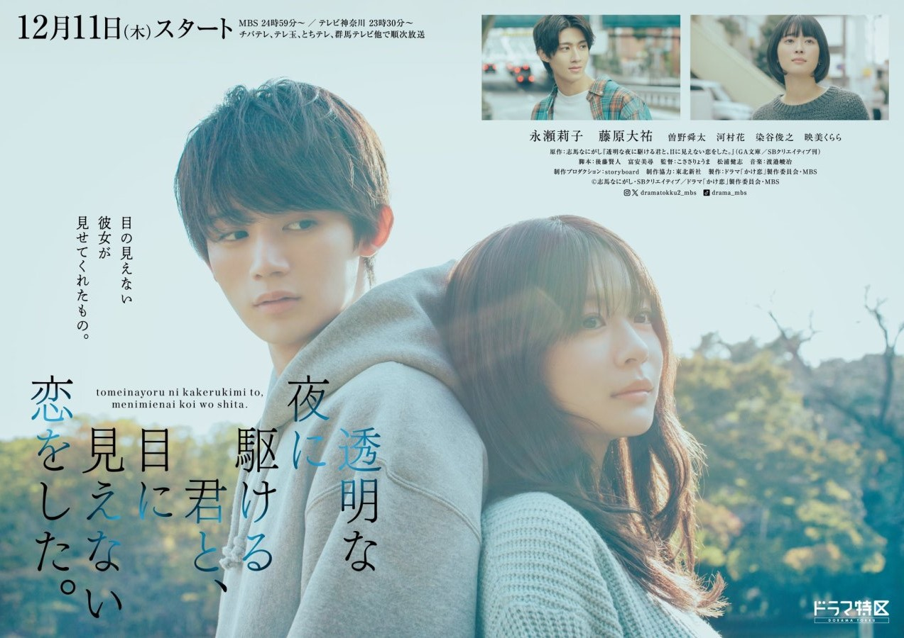

Toumei na Yoru ni Kakeru Kimi to, Me ni Mienai Koi wo Shita (2025)
透明な夜に駆ける君と、目に見えない恋をした

Mahasiswa bernama Sorano Kakeru, yang memiliki trauma emosional terkait hubungan antarmanusia, memperhatikan seorang wanita yang membaca buku sendirian dengan tenang selama salah satu kelasnya. Suatu hari, Kakeru terpaksa menghadiri pertemuan kelas bersama teman sekamarnya, di mana ia bertemu Fuyutsuki Koharu, seorang wanita tunanetra. Ternyata dia adalah wanita yang sama yang dilihatnya membaca di kelas.
Di sana, Kakeru mengetahui bahwa Koharu tidak dapat melihat, dan melalui serangkaian keadaan, ia mulai membantunya dalam tugas kuliahnya. Saat Kakeru terpapar keceriaan dan pandangan positif Koharu terhadap kehidupan, ia secara bertahap merasa tertarik padanya. Koharu, pada gilirannya, tertarik pada Kakeru karena memperlakukannya secara alami dan tanpa pertimbangan khusus meskipun ia buta.
Setelah menghindari hubungan yang mendalam karena insiden masa lalu, Kakeru tetap memutuskan untuk membantu mewujudkan salah satu hal dalam daftar "hal-hal yang ingin saya lakukan dalam hidup" Koharu, yaitu menyalakan kembang api. Saat ia berupaya mewujudkan mimpinya, Kakeru mulai menghadapi ketakutannya sendiri.